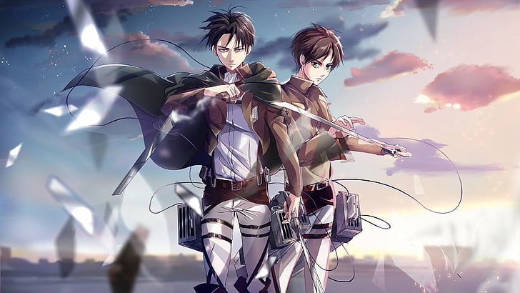
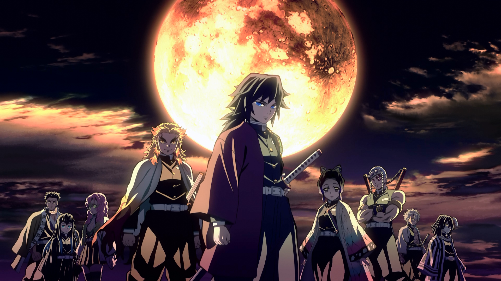
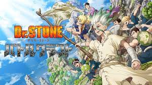

Naruto Shippuden
Naruto, un ninja adolescente, sueña con convertirse en el hokage de su pueblo.
Leer Mas

Shingeki no Kyojin
Muchos años atrás, la humanidad estuvo al borde de la extinción con la aparición de unas criaturas gigantes.
Leer Mas

Dragon Ball Z
se centra en la vida adulta de Son Goku, quien tendrá que defender la tierra de los numerosos villanos.
Leer Mas

Demon Slayer
La serie narra las aventuras de Tanjiro, que busca venganza después de que un demonio acabe con toda su familia.
Leer Mas

Dr. Stone
La historia cuenta las aventuras de Senku, un adolescente que se ve atrapado en un mundo apocalíptico
Leer Mas
© Adrian Meñaca 2023. All rights reserved